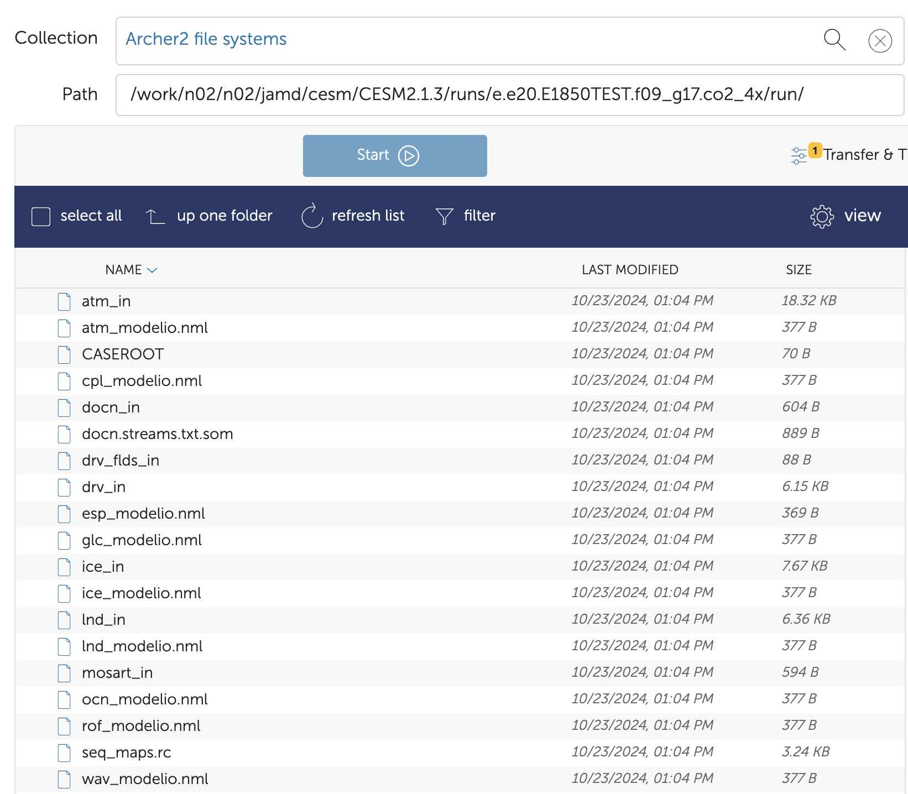
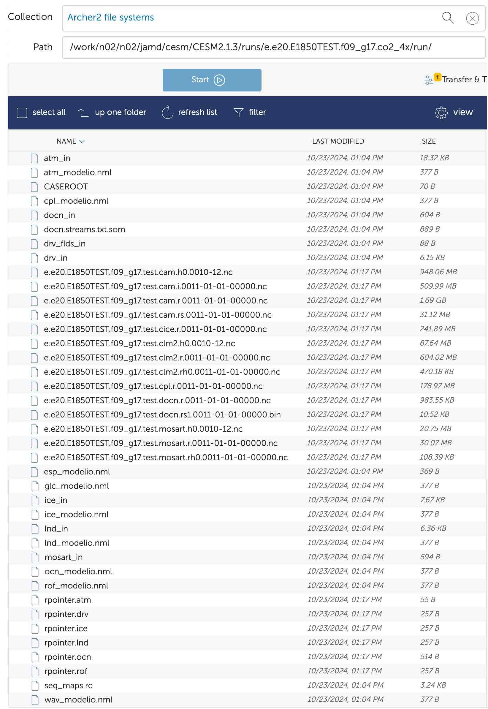

Basics
This page just gives some useful information regarding the Community Earth System Model.
Resources
- Discussion Forum
- Tutorial (particularly useful)
- Practical
- Analysis Example
- My code to help with analysis
Paths on ARCHER2
Paths pointing to different parts of the CESM model are given below.
The paths that are not case specific should be available to use in ARCHER2 after loading the CESM module through
module load CESM2/2.1.3.

$CESM_ROOT = /work/$GROUP/$GROUP/$USER/cesm/CESM2.1.3
This is the overall directory containing all CESM stuff (for me,$GROUP=n02and$USER=jamd, giving:$CESM_ROOT = /work/n02/n02/jamd/cesm/CESM2.1.3)$CESMDATA = $CESM_ROOT/cesm_inputdata
Path to input data.$SRCROOT = $CESM_ROOT/my_cesm_sandbox
Path to CESM source code.$CESM_LOCwill aslo refer to this directory.$CIMEROOT = $CESM_ROOT/my_cesm_sandbox/cime
Path to the Common Infrastructure for Modeling Earth part of the source code.$CASEROOT = $CESM_ROOT/runs/$CASE/
Path to a particular experiment, as indicated by$CASE.$EXEROOT = $CESM_ROOT/runs/$CASE/bld/
Path to the build directories of a particular experiment.$RUNDIR = $CESM_ROOT/runs/$CASE/run/
Path to the run directories of a particular experiment.$DOUT_S_ROOT = $CESM_ROOT/archive/$CASE/
Path to the archive3d model output.
Code Components
CESM consists of several sub models listed below. Output data is saved in a different location for each.

Workflow
Here, I go through the general steps for running an CESM experiment on ARCHER2.
At any point, the file
$CESM_ROOT/runs/$CASE/CaseStatus records commands run and whether each step has been successful.
Step 1 - Login
First, you need to login to ARCHER2 using ssh.
Step 2 - Load modules
Each time you login to ARCHER2, you need to load the python and CESM modules:
module load cray-python
module load CESM2/2.1.3
Step 3 - Create a case
Create a new case using:
create_newcase --case $CESM_ROOT/runs/CASE --compset COMPSET --res RES --project PROJECT
where for me, PROJECT=n02-GLOBALEX.
You may need to add --run-unsupported to the end of this command if you get the following error:
This compset and grid combination is untested in CESM.
Casename convection
Experiment casenames have a convention:
`<compset char>.<code base>.<compset shortname>.<res shortname>[.opt_desc_string].<nnn>[opt_char]`
An example $CASE = e.e20.ETEST.f19_g17.test.


Step 4 - Setup
Navigate to $CASEROOT and then invoke using case.setup, e.g. for $CASE = e.e20.ETEST.f19_g17.test:
cd $CESM_ROOT/runs/e.e20.ETEST.f19_g17.test
./case.setup
Step 5 - Customize namelists
At this stage, you need to specify the details of the experiment by modifying the namelists and/or customizing the output.
Step 6 - Build
Next, the executable should be built through case.build:
./case.build
$CASEROOT.
Step 7 - Download input data
Next, the required input data, from which to start the model, should be downloaded:
./check_input_data --download
$CASEROOT.
Step 8 - Run model
Finally, you can run the model with case.submit:
./case.submit
$CASEROOT. Details of the experiment may need to be changed
before submission using xmlchange.
Model Output
If the model run is successful, the CESM netcdf output
history files are automatically moved to the short term archive, located at $DOUT_S_ROOT. Otherwise, they are in $RUNDIR.
Output files should be moved somewhere else for more long term storage. This is likely to be JASMIN, and the files can be transferred with globus.
Timing information
is saved as $CASEROOT/timing/cesm_timing.$CASE.$date. The model throughput is the estimated number
of model years that you can run in a wallclock day.
The cpl.log file at $CESM_ROOT/archive/$CASE/logs indicates whether successful.
It should end with
SUCCESSFUL TERMINATION OF CPL7-cesm.
XML Modifications
Some details of the experiment such as how long to run it, and on which queue to submit to, are
specified with xml variables.
These can be checked with xmlquery and modified with xmlchange from the
$CASEROOT directory. This should be done just before running the experiment.
You can check
all variables containing the word VAR using -p for a partial match:
./xmlquery -p VAR
You can change
the value of variable VAR to the new value of new_val using:
./xmlchange VAR=new_val
Useful Variables
JOB_WALLCLOCK_TIME- Max time to run job for. Must be less than max walltime of chosenJOB_QUEUE. This is listed on ARCHER2 website.STOP_N- Experiment will end afterSTOP_NSTOP_OPTION.STOP_OPTION- Unit of simulation time to indicate how long to run for e.g.nmonths,nyearsorndays.JOB_QUEUE- Which queue to submit to. Most common on ARCHER2 arestandardorshort.CONTINUE_RUN-TRUEto continue run from last restart file.RESUBMIT- Need to use if experiment takes longer than max job time on partition being used.
Restarting
Restart files
are written according to the REST_OPTION and REST_N settings.
By default, this is set to be the same as $STOP_OPTION and $STOP_N i.e. one restart file per run.
The restart files are saved as $DOUT_S_ROOT/rest/yyyy-mm-dd-ssss/.
To carry on running a model
from a restart file, you need to set CONTINUE_RUN=TRUE using xmlchange. By default, it is FALSE, in which
case the experiment would just be run from the beginning again.
Rather than conitnuing a run from when the last job finished, if you want to
restart from a specific point,
you can move the restart file into the $RUNDIR.
Namelists
Namelists
can be modified through the user_nl_xxx files in $CASEROOT:

This is where you modify details of the simulation e.g. \(CO_2\) concentration.
Customizing Output
By default, the simulation will just output the monthly average of default variables.
Within the user_nl_xxx files, there are three namelist variables which allow you to
change output frequency
(nhtfrq) e.g. to daily average, as well as add extra variables or history files
(fincl).
The print_ds_var_list function is quite useful
for checking which variables are in the CESM default output, and thus to decide which to output at a different
frequency.
Example
Below I go through how to run an experiment called e.e20.ETEST.f19_g17.test_daily_output for 40 days while outputting
the daily average of the following in h1 history files which contain 10 days each:
T: TemperatureTS: Surface temperatureQ: Specific humidityZ3: Geopotential heightLHFLX: Surface latent heat fluxSHFLX: Surface sensible heat fluxFSNS: Net solar flux at the surfaceFLNS: Net longwave flux at the surfaceU10: 10m wind speed
Go through up to step 5 as normal:
$CIMEROOT/scripts/create_newcase --case $CESM_ROOT/runs/e.e20.ETEST.f19_g17.test_daily_output --compset ETEST --res f19_g17 --project n02-GLOBALEX --run-unsupported
cd $CESM_ROOT/runs/e.e20.ETEST.f19_g17.test_daily_output
./case.setup
Now customize $CASE_ROOT/user_nl_cam to include the variables:
! Users should add all user specific namelist changes below in the form of
! namelist_var = new_namelist_value
nhtfrq = 0, -24 ! Monthly average for default h0 file, daily average for h1 file
mfilt = 1, 10 ! 1 file per month for h0, 1 file per 10 days for h1 file
fincl2 = 'T', 'Q', 'Z3', 'TS', 'LHFLX', 'SHFLX', 'FSNS', 'FLNS', 'U10' ! Variables to save daily in h1
Continue the rest of the pipeline as normal:
./case.build
./check_input_data --download
./xmlchange STOP_N=40
./xmlchange STOP_OPTION=ndays
./case.submit
This produces files such as e.e20.ETEST.f19_g17.test_daily_output.cam.h1.0001-01-01-00000.nc
in $DOUT_S_ROOT with the h1 history file indicator containing the output for daily data.
This example only changes atmospheric variables, but you can do similar things for the other components.
The namelist files should be edited after setup but before build. Note that the
_in files only appear in $CASEROOT after ./case.build and these should not be edited.
Optionally, can run ./preview_namelists from $CASEROOT after editing namelists, but this is done anyway in
./case.build. But if you have changed the namelists and then want to continue the same run, you can just run
./preview_namelists followed by ./case.submit with CONTINUE_RUN=TRUE to continue an experiment
with modified namelists.
Warning
Note that you cannot change history options (i.e. customize output) on a restart and instead must do a branch run.
Branch Run
This section describes how to do a branch run. This will take an experiment you have already run at a particular point in time as a starting condition, then modify the experiment somehow e.g. change \(CO_2\) concentration, and continue the run.
The workflow for this is exactly the same as you carried out for the experiment you want to branch off
from up until Step 5, except the case name should be different.
E.g. if the initial experiment was called e.e20.E1850TEST.f09_g17.test, the branched experiment may be called
e.e20.E1850TEST.f09_g17.branch.
Step 5 is where you make this experiment different from the experiment you have already
run, e.g. change \(CO_2\) concentration through the variable co2vmr or co2_vmr_rad in the user_nml_cam
namelist file.
Next, you should build the executable as usual, but you can skip downloading the input data because you are starting from a restart file, not input data.
Branch Point
At this stage, you need to
specify the branch point
by moving the relevant restart files into $RUNDIR.
To restart from the date yyyy-mm-dd-ssss, all the files in the directory
$DOUT_S_ROOT/rest/yyyy-mm-dd-ssss/ of the initial experiment should be moved to $RUNDIR of the new experiment
Example
If I want to create a branch called e.e20.E1850TEST.f09_g17.branch from 1st January Year 11 of experiment called
e.e20.E1850TEST.f09_g17.test, then I would move all the files in the directory
$CESM_ROOT/archive/e.e20.E1850TEST.f09_g17.test/rest/0011-01-01-00000/ to
$RUNDIR = $CESM_ROOT/runs/e.e20.E1850TEST.f09_g17.branch/run/.
The $RUNDIR before and after this transfer is shown below. Afterwards, there are .nc and rcpointer files
in the $RUNDIR.


Once the restart files have been transferred, xmlchange must be used to indicate that this experiment is a branch run.
If we are branching off from an experiment with casename old_case at the date yyyy-mm-dd, then you should run:
./xmlchange RUN_TYPE=branch
./xmlchange RUN_REFCASE=old_case
./xmlchange RUN_REFDATE=yyyy-mm-dd
./xmlchange GET_REFCASE=FALSE
Example
Continuing from our previous example, you would run:
./xmlchange RUN_TYPE=branch
./xmlchange RUN_REFCASE=e.e20.E1850TEST.f09_g17.test
./xmlchange RUN_REFDATE=0011-01-01
./xmlchange GET_REFCASE=FALSE
After this, the branch job can be submitted as normal, remembering to specify the run duration etc.